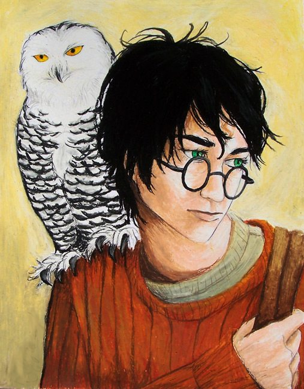

The World of Harry Potter
Howarts Castle
Hogwarts is one of the world’s finest wizarding schools, located in a massive castle in Scotland. Hogwarts takes students from all over Great Britain, starting at the age of 11. The students leave school after their seventh year.
HARRY POTTER
Harry Potter is the Boy Who Lived, the Chosen One, the hero of the Wizarding world. He grew up with Muggles, and then came to Hogwarts where he faced dangers and terrors beyond his years. He, along with his friends Hermione Granger, Ron Weasley and Neville Longbottom, destroyed Voldemort’s Horcruxes. Harry faced Voldemort at the end of a climactic battle in Hogwarts castle and defeated him.

The Sorting Hat is an ancient wizard’s hat which is used at the beginning of every school year to sort incoming students into their Houses. The hat resides in the Head’s office at Hogwarts.
Dumbledore’s Army (The D.A.)
The D.A., or Dumbledore’s Army, was a group of students who were trained by Harry Potter in magical combat during the 1995-1996 school year at Hogwarts. The D.A. fought in several battles against the Death Eaters and suffered casualties. The group loosely reformed during the 1997-1998 school year, led by Neville Longbottom and Ginny Weasley, as a resistance against the regime of Severus Snape and the Carrows at Hogwarts. More commonly referred to as the D.A., the name of the organization was chosen by Ginny Weasley to go with the initials (suggested by Cho Chang as an acronym for another possible name). The name “Dumbledore’s Army” was selected because it signified the worst fear of certain high-ranking officials in the Ministry of Magic at the time.
Voldemort
Lord Voldemort, born Tom Marvolo Riddle, was the son of Merope Gaunt (a descendent of Salazar Slytherin) and Tom Riddle, a handsome, wealthy Muggle from Little Hangleton whom Merope ensnared with a love potion. When her husband found out she was a witch, he abandoned her while she was pregnant. Tom’s mother died shortly after giving birth to him one December 31, living just long enough to name him Tom Riddle, after his father and Marvolo, after his grandfather.
Albus Dumbledore
Albus Dumbledore was the Headmaster of Hogwarts for close to forty years, a time period that encompassed both of Voldemort’s attempts to take over the Wizarding world. Considered to be the most powerful wizard of his time, Dumbledore was awarded the Order of Merlin, First Class, and was the Supreme Mugwump of the International Confederation of Wizards as well as the Chief Warlock of the Wizengamot.